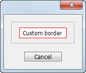
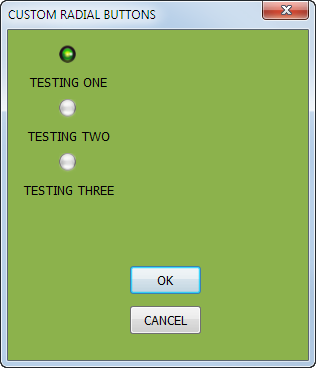
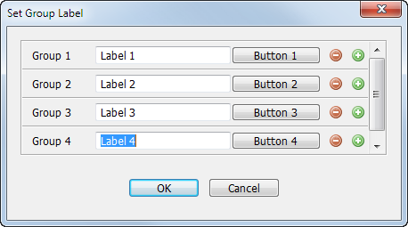
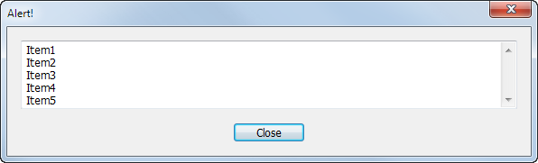
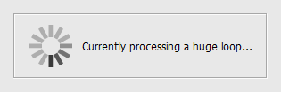
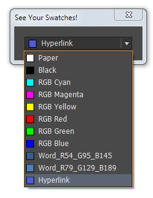

Script UI
It is possible to do some crazy stuff with ScriptUI. It can be a bit verbose to code, but, it's pretty solid.
Script UI bugs
Script UI palette
Important note: unfortunately, after CS6 it was no longer possible to change fonts or type size in ScriptUI panels and dialogs.
ScriptUI EditText with custom border (Win & Mac) by Marc Autret
On Mac OS, the EditText widget is subject to a specific focus ring wich automatically allocates 2 or 3 additional transparent pixels all around the field! Hence, if the control is nested within a background-colored group, that color is revealed through this additional space.
From that point you need to apply two fixes:
(1) create a white subgroup between the outer group and the EditText to make sure that the revealed background fits the EditText background
(2) make the EditText borderless to inhibits its own stroke.

// ScriptUI EditText with custom border (Win & Mac)
// ==========================
var STROKE_COLOR = [1,0,0], // red
STROKE_WEIGHT = 1, // in pixels
FILL_COLOR = [1,1,1], // white
INSET_SPACE = 3; // in pixels -- Mac OS focus ring needs it >=3
var u,
w = new Window('dialog'),
// ---
gBorder = w.add('panel').add('group'),
gSpacer = gBorder.add('group'),
e = gSpacer.add('edittext', u, u, {borderless:true}),
// ---
bCancel = w.add('button', u, "Cancel"),
// ---
gx = w.graphics,
SOLID_BRUSH = gx.BrushType.SOLID_COLOR;
// Edit field settings
// ---
e.characters = 12;
gBorder.margins = STROKE_WEIGHT;
gBorder.graphics.backgroundColor = gx.newBrush(SOLID_BRUSH, STROKE_COLOR );
gSpacer.margins = INSET_SPACE;
gSpacer.graphics.backgroundColor = e.graphics.backgroundColor = gx.newBrush(SOLID_BRUSH, FILL_COLOR );
w.show();
Underlined StaticText by Marc Autret

var u,
w = new Window('dialog', "Underline Me!"),
s1 = w.add('statictext', u, "Not Underlined"),
s2 = w.add('statictext', u, "Underlined"),
b = w.add('button', u, "OK"),
// ---
wgx = w.graphics,
linePen = wgx.newPen(wgx.PenType.SOLID_COLOR,[0,0,0], 1);
s2.preferredSize[1] += 3;
s2.onDraw = function(/*DrawState*/)
{
var gx = this.graphics,
sz = this.preferredSize,
y = sz[1]-1;
gx.drawOSControl();
gx.newPath();
gx.moveTo(0, y);
gx.lineTo(sz[0],y);
gx.strokePath(linePen);
};
w.show();
Custom Radial Buttons by Brett Gonterman

Click here to download.
ScriptUI Tips and Tricks by Marc AutrettestScroller.js by Marc Autret — Demonstrates ScriptUI Scrollbar usage

Scrollable panel
TIP (by Peter Kahrel): A good alternative to a scrollable panel is a multi-column list. Scrolling is handles automatically. Much easier to code.
Scrollable alert by Marijan Tompa

Scrollable panel group in scriptUI
Scrolling panel by Bob Stucky
Interactive scrollable panel by Luis Felipe Corullón
Apply a custom border to an EditText
Spin progress bar by Marc Autret

ScriptUI Fonts FactsScriptUI Custom Events — new UIEvent(…) works fine in InDesign (CS4/CS5/CS6) provided that you let the view parameter undefined.
See Your Swatches in ScriptUI by Marc Autret

This function fails on spot colors that are imported with placed files — e.g. eps or ai — when the script attempts to change the space to RGB on the following line:
color.space = RGB;
The original discussion is here.
Example of a dynamic “folder” dialog box
PNG creator function by Jongware
ScriptUIGraphics capabilities example by Marc Autret
Online ScriptUI dialog builder by Joonas Pääkkö — the offline version is here.